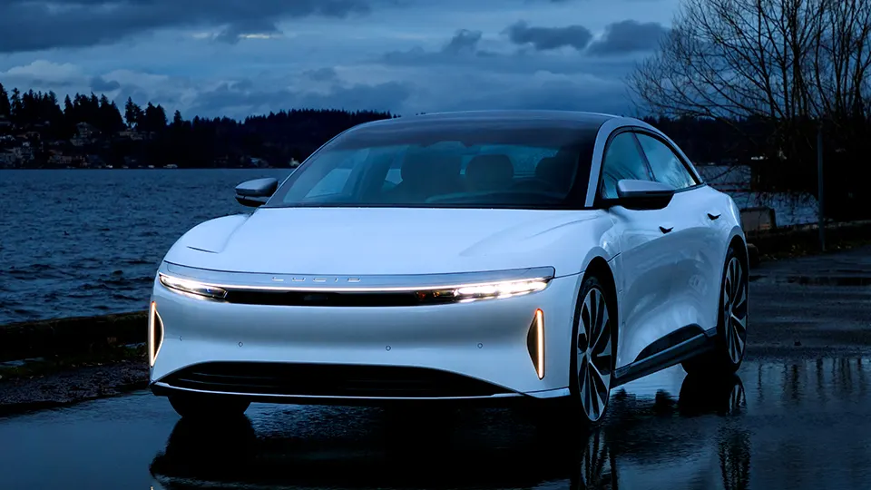

With gas becoming more and more scarce as time goes by and as gas prices raise, people are looking for other ways of transportation. This is where the production of electric cars comes in.
Electric cars are what humans are moving towards in order to help our planet. Electric cars are the future, but that does not mean it is all good. In this website we will go over some of the pros and the cons of electric cars to see how helpful or harful they are.